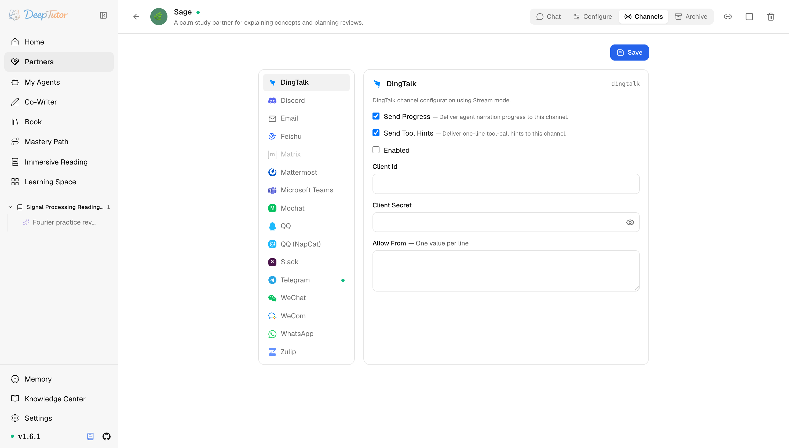

夥伴與管道釘釘
DeepTutor 接入釘釘教學！只要 2 個憑證，無需對外 IP 無需回呼，企業釘釘秒變 AI 助手！｜零度解說
為 Partner 設定釘釘管道——企業內部應用、Stream Mode 連線、無需對外網路回呼。
原文連結：https://docs.deeptutor.info/zh-cn/partners/dingtalk/
最近在折騰 DeepTutor 管道接入的朋友，問得最多的就是：公司用釘釘辦公，AI 學習夥伴（Partner）能不能接進去？
答案是能，而且接入方式相當省心，整條鏈路只需要 2 個憑證：Client ID 和 Client Secret。
dingtalk 管道透過官方 dingtalk-stream 開發工具包（SDK）的 Stream Mode 把 Partner 接到釘釘企業機器人上：收訊息走 DeepTutor 主動發起的出站連線，不需要對外 IP，也不需要 HTTP 回呼地址；回覆走釘釘的 HTTP API，以 markdown 訊息發出，私聊和群聊都支援。
這個設計對企業使用者是真的香。

Partner 執行起來之後，先看卡片的即時狀態：它應該從 Connecting 進入 Connected；只有失敗狀態需要更多細節時，再去查日誌。
一、安裝依賴
釘釘支援已經包含在 Partners 可選元件（extras）裡，底層就是官方 dingtalk-stream SDK，不需要額外安裝任何東西，一條命令裝完：
pip install -e ".[partners]"
# 或发布包支持 extras 时：
pip install "deeptutor[partners]"官方入口：
二、在開放平台建立企業內部應用
- 用有開發權限的帳號登入 釘釘開放平台 。
- 進入 應用開發 ，建立一個 企業內部應用 ，填好名稱、描述、圖示。
- 在應用裡新增 機器人 能力（應用能力 -> 機器人），設定機器人的名稱和頭像。
- 在機器人的訊息接收設定裡，把接收模式選為 Stream 模式 （不是 HTTP 回呼），免對外網路地址全靠它。
- 在 憑證與基礎資訊 頁複製 Client ID （AppKey）和 Client Secret （AppSecret），待會兒填進管道卡片（channel card）。
- 發布應用版本。 草稿狀態的機器人收不到任何 Stream 訊息。發布後設定好可用範圍，再在釘釘裡把機器人加上（通訊錄裡搜尋，或拉進群）。
三、設定管道卡片
開啟 Partners -> 你的 partner -> Channels -> DingTalk。
| 欄位 | 怎麼填 |
|---|---|
| Send Progress | 測試時建議開啟。長任務會把過程解說（narration）即時發過來。 |
| Send Tool Hints | 除錯時建議開啟；不想讓使用者看到一行工具呼叫就關掉。 |
| Enabled | 準備啟動管道時再開啟。 |
| Client Id | 憑證與基礎資訊頁的 AppKey（一般 ding... 開頭）。 |
| Client Secret | 同頁的 AppSecret。按 secret 儲存，儲存後會遮罩顯示。 |
| Allow From | 一行一個值。測試可填 * 表示開放；正式用換成釘釘 staff id（每條入站訊息的 sender id 都會打在 partner 日誌裡）。空列表會拒絕所有人。 |
回覆以 markdown 訊息發出，標題、列表、連結在釘釘裡都能正常渲染。
更有意思的是，語音訊息也能處理：釘釘自帶的語音轉文字結果會以純文字轉給 Partner。
四、儲存之後
- 點 Save ，把 Enabled 開啟。
- 啟動 partner（已在執行的話重新啟動，或在 Channels 面板上用 reload）。
- 用允許的帳號在釘釘裡找到機器人，私聊發一條短訊息，或在它所在的群裡 @ 它。
- 看 partner 日誌：能看到
Received DingTalk message from <name> (<id>)，隨後是回覆投遞。 - 在日誌裡確認 sender id 之後，把 Allow From 裡的
*換成真實 id。
如何確認健康
- 日誌出現
DingTalk bot started with Stream Mode，且沒有反覆刷Reconnecting DingTalk stream in 5 seconds...。 - 允許的帳號私聊一條短訊息，能收到 markdown 回覆。
- 在群裡 @ 機器人，回答會路由回那個群。
常見問題
Stream 連線反覆重連
掉線後管道每 5 秒自動重試，偶爾一條重連日誌無傷大雅；連成一串洗版就是憑證錯了或網路到不了釘釘的伺服器端，先重查 Client Id / Client Secret。
Failed to get DingTalk access token
發訊息要用同一對憑證換 access token。出這個錯基本就是 Client Secret 在平台上被輪換過，去憑證與基礎資訊頁抄最新的值，重新儲存。
連上了但收不到訊息
平台側查三件事：應用版本已發布（草稿收不到）、訊息接收模式是 Stream 模式、機器人確實夠得著：在可用範圍內，並且已經加進你測試用的會話。
機器人從不回覆
幾乎都是 Allow From 的問題。空列表會拒絕所有人，包括你自己。先填 * 測一輪，再換成日誌裡列印的 staff id。
相關頁面
- Channel Matrix — 所有 channel 一覽
- Feishu — 另一大國內辦公 IM，同樣免 webhook
部署過程遇到問題，歡迎在留言區留言，把報錯的完整日誌貼出來，我看到會回覆。